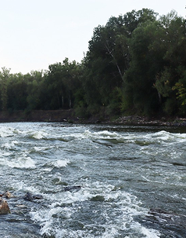
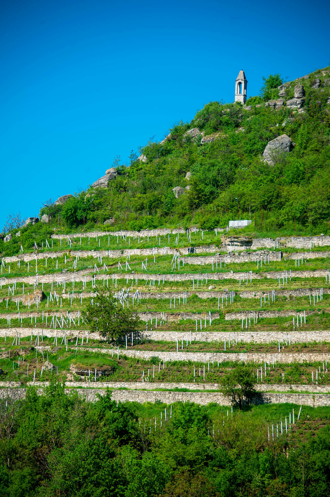
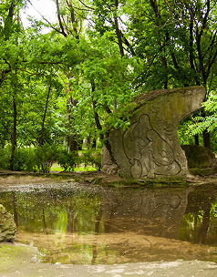
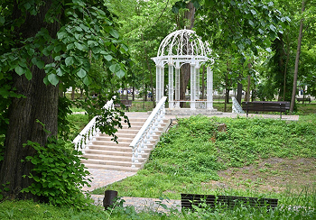
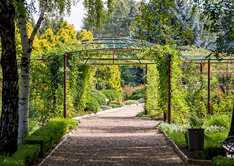
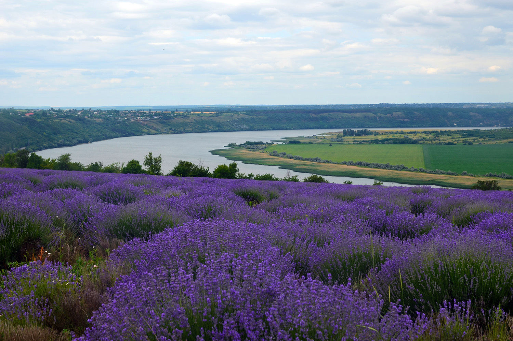

EcoTravel
Приднестровье
Главная
Маршруты
Карта региона
Достопримечательности
Советы путешественникам
О нас
Контакты
0
ДОСТОПРИМЕЧАТЕЛЬНОСТИ
“Необычные места рядом — просто посмотри вокруг”
Сортировать по:
Популярности
Новизне
Регион: все
Каменка
Рыбница
Дубоссары
Григориополь
Тирасполь
Бендеры
Слободзея
Днестровск
Показать

Турунчук →

Виноградные террасы →

Парк имени Д.К. Родина →

Парк Витгенштейна →

Ботанический сад →
Кицканский лес →
Кучурганский лиман →

Лавандовое поле (близ села Гояны) →
Заповедник Ягорлык: прогулка в сердце дикой природы →
Приднестровье - это край, где плещется Днестр и молчат древние холмы
×
Мои избранные
У вас пока нет избранных элементов
×